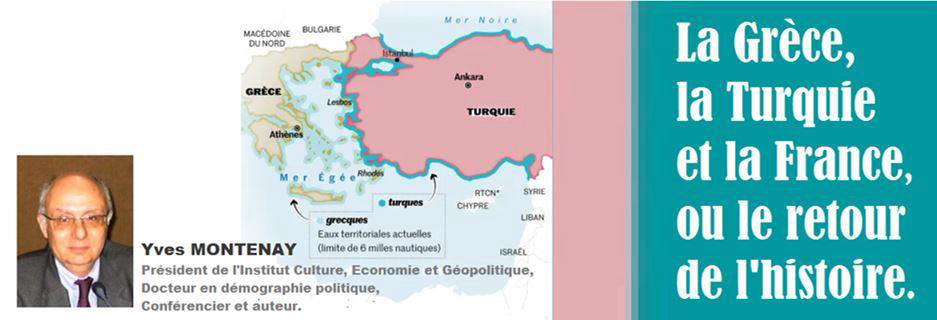
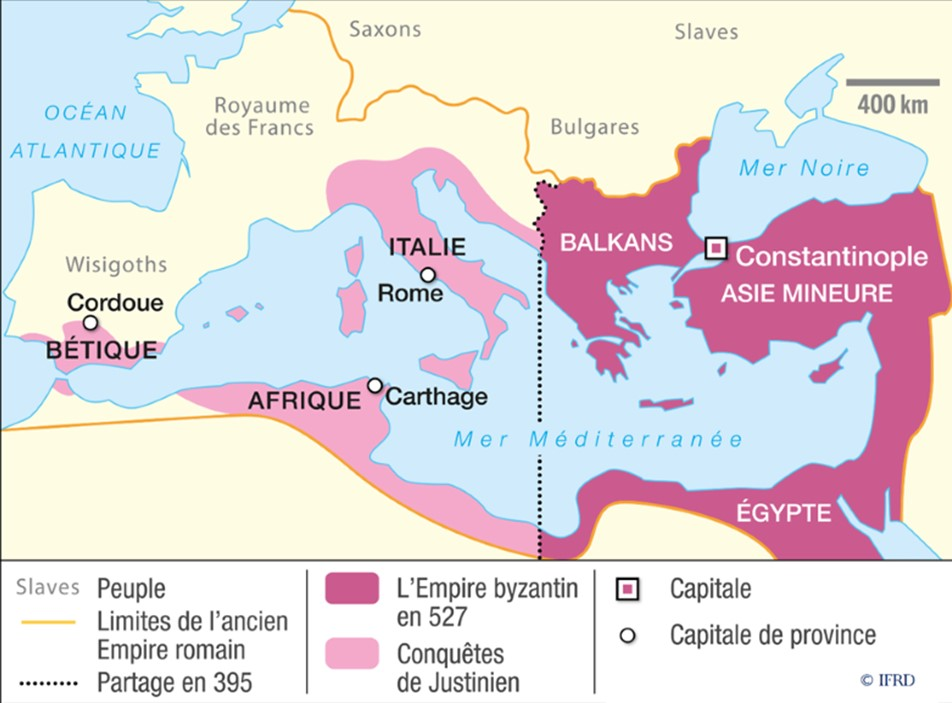
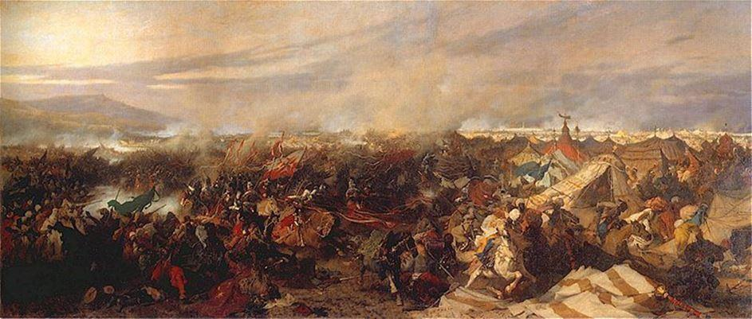
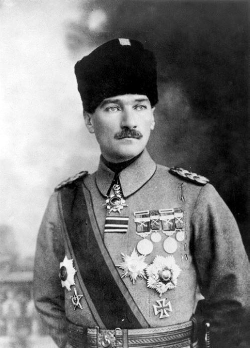
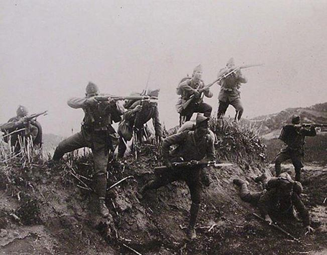
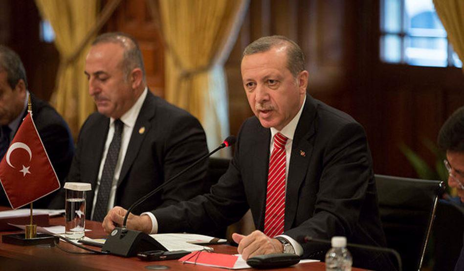

La Grèce, la Turquie et la France, ou le retour de l’histoire
par Yves MONTENAY

Le quasi conflit actuel oppose principalement la Grèce, soutenue par la France, à la Turquie pour la propriété du plateau continental autour des îles grecques. Il oppose aussi la France à la Turquie1 à la suite d’un incident naval entre un navire de guerre français et un navire turc qui livrait des armes à la Libye malgré l’embargo de l’OTAN.
Cela a réveillé de sanglants souvenirs millénaires que les Européens voudraient oublier. Mais le président turc met de l’huile sur le feu, autant par conviction personnelle que par tactique politique.
Des Byzantins à Atatürk
Aussi loin que l’on remonte dans le temps, une grande partie de l’actuelle Turquie était de population grecque. Même les Romains n’ont pas latinisé la région. L’empire byzantin qui leur a succédé était de langue grecque.
Les Turcs, seldjoukides (ceux qui faisaient face aux croisés), puis ottomans, n’ont pas vraiment peuplé la région. L’empire ottoman, comme tout empire, fédérait des « nations » (nom que l’on donnait alors à des peuples, indépendamment de toute frontière), et l’une de ces nations était grecque, que ce soit dans la Grèce actuelle ou en Anatolie. Mais cet empire étant à direction musulmane, les Grecs étaient, en tant que chrétiens, des citoyens de second rang, des dhimmis, protégés moyennant un impôt spécial… et néanmoins de temps en temps massacrés par les musulmans.
Grèce et Turquie dans l’imaginaire français et occidental
L’image de la Turquie se dégrade continûment en Occident de la Renaissance au XIXe siècle. Les Occidentaux parlent d’abord avec respect d’un empire puissant, « le grand Turc », puis les Ottomans prennent un retard croissant.
Les Turcs réagissent à ce déclassement avec une cruauté que l’Europe abandonnait (très progressivement) depuis le Moyen Âge. Les peuples d’Europe centrale sonnaient « la cloche turque » quand les soldats ottomans approchaient, lesquels, pour terroriser la population fracassaient la tête de bébés contre les murs (cf Pierre Béhar, Vestiges d’empire 2, Desjonquères 1999).
Lorsque les défaites turques s’accumulèrent après le deuxième siège de Vienne (1683) et tout le long des deux siècles suivants, on retenait surtout leurs coutumes barbares et leurs costumes étranges : l’empire était « l’homme malade de l’Europe », ce qui humiliait profondément les Turcs modernistes, surtout présents dans l’armée. D’où aujourd’hui, comme en Chine, le désir de la Turquie de venger des humiliations de l’Occident.

Bataille de Vienne
À l’inverse, la Grèce toujours sous le joug de l’empire ottoman au début du XIXe, cultivait son image de « mère de l’Europe » : la Grèce classique, ses arts, ses sciences, sa démocratie… image qui lui a été très utile pour avoir l’appui occidental face à la Turquie pour son indépendance et pour la récupération des autres territoires sous domination turque au début du XXe siècle. Cette image a également été très utile pour avoir l’appui financier des Occidentaux pendant les deux derniers siècles et pour jeter un voile sur l’aspect « oriental » de la gestion du pays.
L’indépendance grecque malgré la répression turque
Cette indépendance proclamée en 1822 sur une partie du territoire grec seulement, ne sera militairement matérialisée qu’en 1829. Elle est acquise avec l’appui matériel et moral occidental et notamment français, dont la victoire de Navarin sur la flotte ottomane.
Nous avons tous appris, du moins dans ma génération, les poèmes de Victor Hugo 3 : « Chio, l’île des vins, n’est plus qu’un sombre écueil » (dans l’ensemble de la Grèce, les Turcs massacrent 25 000 personnes et en emmènent 40 000 en esclavage) et « je veux, dit l’enfant grec, de la poudre et des balles ».
De l’Empire Ottoman pluri-national à la République turque nationaliste
L’empire évolue rapidement 4 avec le poids croissant des « jeunes Turcs » dans l’armée puis au gouvernement. Leur chef Mustafa Kemal finit par renvoyer le calife et fonder une république laïque, c’est-à-dire où les cadres musulmans sont sous tutelle de l’État et privés de tout pouvoir, notamment dans l’enseignement.
Les Jeunes Turcs, comme leur nom l’indique, et comme le surnom de Mustafa Kemal, « Atatürk » (le père des Turcs) le confirme, entreprirent de « turquifier » le pays, notamment en en massacrant les Arméniens.
Pour les Grecs, ils opérèrent en deux temps :
- premièrement, en déclenchant la guerre gréco-turque en 1922, perdue par la Grèce. La Turquie a alors annexé la région de Smyrne (Anatolie occidentale) largement peuplée de Grecs. Ces derniers ont été échangés contre les Turcs de Grèce.
- deuxièmement, la Turquie expulse petit à petit tous les autres Grecs y compris d’Istanbul, ce que j’ai suivi dans la presse, faisant de l’ancienne Byzance une ville 100 % turque.
L’origine de la frontière actuelle et sa remise en question
Ceux qui ne connaissent pas cette guerre de 1922 ne comprennent pas pourquoi la frontière actuelle entre la Grèce et la Turquie passe au ras de la côte turque laissant toutes les îles – et donc les droits miniers marins – côté grec.

Guerre gréco-turque (1919 – 1922)
C’est la contrepartie de l’échange qui laissait à la Turquie les villes grecques tri-millénaires de la côte continentale.
Le traité de paix de Lausanne, en 1922, dont la France est signataire, reconnaît internationalement cette frontière, que le président turc Erdogan tente de remettre en question aujourd’hui.
La brutalité turque paye à Chypre
Il faut dire que la Turquie a été encouragée par un premier succès : l’annexion de fait du nord de Chypre au mépris de toutes les lois internationales et de la composition de sa population.
En deux mots, Chypre était une île dont la population était grecque à 80 % et turque à 20 %. Une partie de la population réclamait le rattachement à la Grèce, et la Turquie craignait pour le sort de la minorité turque, bien que cette dernière ne soit pas brimée en Thrace occidentale, région grecque proche d’Istanbul ayant une forte minorité turque. Ce fut du moins le prétexte officiel de l’intervention.
L’armée turque envahit le nord de Chypre en 1974, occupe 50 % du territoire national, en chasse la population grecque, recueille la population turque qui était dans d’autres régions de l’île et y a ajoute des colons turcs venus d’Anatolie. L’ONU a instauré une « ligne verte » séparant l’armée turque de l’armée chypriote, et la situation n’a pas évolué depuis.
C’est bien sûr un souvenir amer pour les Grecs, qui les rend allergiques à tout mouvement des bateaux turcs.
Les données géopolitiques d’aujourd’hui
Je serai bref, car ces données sont abondamment décrites par la grande presse.
La Turquie est au sens propre sous le règne du président Erdogan qui s’est d’abord présenté comme un islamo-démocrate économiquement libéral et efficace, roulant dans la farine une Union européenne bizarrement inculte, avant de se proclamer islamiste de la famille des Frères musulmans.
Or, Erdogan est en difficulté 5. Aux dernières élections, il n’a obtenu qu’environ 50 % des voix, et depuis la situation économique s’est très fortement dégradée, alors qu’une partie des électeurs avait voté pour lui non pour ses opinions mais pour la prospérité qu’il avait apportée. Erdogan a réagi par la répression. Il estime qu’une diversion faisant appel à l’orgueil national turc pourrait lui ramener des voix, et il a effectivement l’appui des parlementaires de l’opposition.
Erdogan espère obtenir l’appui de la Russie 6. Or cette dernière tient un rôle ambivalent : d’un côté, elle souffle sur le feu pour que la Turquie quitte l’OTAN, mais les deux pays sont opposés en Syrie et en Libye et s’y combattent par mercenaires interposés.
En Grèce, la droite est revenue au pouvoir à Athènes, et a également un électorat relativement nationaliste.
Quant à la France, elle est alliée de la Grèce dans l’OTAN, et soutient ce pays sur les plans militaires et financiers depuis 200 ans. Accessoirement, elle se retrouve de fait (mais pas officiellement) face à la Turquie en Libye, puisqu’elle soutient le général Haftar.
Et revoici l’Occident face à l’Empire Ottoman…
Erdogan a refermé « la parenthèse Atatürk » d’européanisation de la Turquie, et l’on est revenu à la vieille opposition entre un empire ottoman humilié et l’hostilité occidentale (version contemporaine de « chrétienne ») envers un islam brutal et dominateur.
D’autant que maintenant Erdogan se voit en chef de tous les musulmans … C’est-à-dire calife, bien qu’il ne prononce pas le terme. D’après The Economist du 14 septembre, il commence à être considéré comme tel en Europe musulmane : Bosnie, Albanie, Kosovo, trois débris de l’empire ottoman, et même en Europe occidentale où les musulmans se considérant brimés sont encouragés à se plaindre dans les consulats de Turquie !
Bref, au-delà de l’actualité immédiate qui est fluctuante, les racines du conflit sont profondes : en fermant la parenthèse kémaliste, Erdogan réveille des oppositions et parfois des haines séculaires. Il joue volontairement avec le feu.
Un éventuel compromis sur l’exploitation du sous-sol marin ne supprimera pas les causes profondes du conflit sauf changement de pouvoir en Turquie. Les présidentielles turques sont pour 2024, mais Erdogan travaille activement à les « orienter » par sa mainmise sur les médias et l’incarcération des protestataires.
Partager cette page